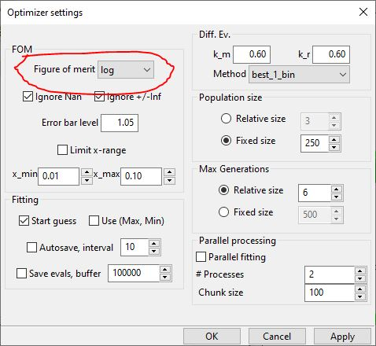

Simple Reflectivity Model (XRR/NR)¶
This tutorial will show you the general use of the SimpleReflectivity plugin (see Plugins: an introduction) to build a neutron or x-ray reflectivity model and fit it to your data.
Getting started¶
Start by opening GenX and selecting the SimpleProfile. (Or load the simple reflectivity plugin by going to the menu .)
When creating a new model the GUI will show a wizard to guide you through the initial model setup:


Afterwards the GUI will show the initial interface with a preset model of a 3-Layer system with air above and silicon as a substrate:

The Model Table¶
At the bottom is a table with the sample structure. Each model has one Ambient layer (media the neutron propagates through before reflection), a set of top layers (green) that are not repeated, a set of central layers (white) that can be repeated if Repetition is >1, a set of bottom layers (purple) that are not repeated and finally a substrate at the bottom. Each of the layers have the same set of parameters (besides thickness that is missing for Ambient and Substrate) whose meaning depends on the selection in the Second column (Formula/Mixure).

These parameters are:
Formula
- Layer:
User defined name for each layer, has to be unique
- Chem. Formula:
Define the elemental composition for the layer as sum formula (e.g. Fe2O3). In case that you would prefer to enter the scattering length density directly set this to SLD
- Density [g/cm³]:
Material mass density for the layer. If Chem. Formula is SLD this is the scattering length density in units of 10⁻⁶ Ų.
- Moment [µB/FU]:
Magnetic moment, if any, within the layer in units of 1 Bohr-Magneton per given Chemical formula unit (FU). This value has no obvious meaning for Chem. Formula set to SLD.
- d [Å]:
Thickness of this layer.
- σ [Å]:
Roughness of this layer.
Mixure (of two materials)
- Layer:
User defined name for each layer, has to be unique
- SLD-1 [10⁻⁶ Ų]:
Scattering length density (SLD) for the first material
- SLD-2 [10⁻⁶ Ų]:
SLD for the second material
- Fraction [% SLD-1]:
Amount of first material in the mixture (e.g. H2O vs. D2O)
- d [Å]:
Thickness of this layer.
- σ [Å]:
Roughness of this layer.
Layers can be added, deleted and moved within their block with the toolbar buttons above after selecting a layer in the grid:

If all layers of a top or bottom block have been removed, they can be added by selecting the Ambient or Substrate lines. The to Advanced Model button on the right of the toolbar allows to quickly convert the model to the Reflectivity plugin for more advanced modeling options. (see Fitting of x-ray reflectivity data and Neutron reflectivity tutorial.)
Instrument Parameters¶
For parameters that concern the experiment itself a dialog can be opened with the Instrument Settings button in the toolbar. The dialog allows to choose:
- probe:
The radiation type used
- wavelength:
The wavelength used, if not measureing time of flight neutrons
- I0:
Initial intensity, for nomalized data this should be 1.0
- coords:
Coordinats of the x-axes, angle 2-Theta or wavevector transfer q
- Ibkg:
Constant experimental background (value at high q)
- res:
Instrumental resolution in the same coordinates as x
- footype:
Function used for footprint correction. no corr for no correction, square- or gaussian beam profile
- samplelen:
Length of the sample along the beam, ignored if no corr was selected
- beamw:
Width of the beam in scattering direction, for gaussian beam this is the sigma value
Note
If a data loader was selected that supports a resolution column (orso, resolution, d17_cosmos, sns_mr etc.) the SimpleReflectivity plugin automatically uses this column for the resolution if the res parameter is not zero. If there are issues with the resolution column the Calculation on selected dataset(s) dialog has to be used to modify the res column.
Reading the data¶
To load the data select the dataset in the list on the right and click the small Open icon above it to import a dataset. For multiple datasets you can add more entries by pushing the plus button in the same toolbar.
If you are using the generic auto, default or resolution data loader you may have to first select the data file columns that correspond to x, y, dy (and maybe resolution). This can be done with the menu option.
For an example dataset you can create a new model and choose neutron, d17_legacy and q from the wizard. Then select the dataset and open D17_SiO.out from the GenX examples folder (found also on github). Remove green and purple layers from top and bottom and choose “Si” with density 2.32998 for the substrate and “SiO” with density 2.5 and thickness around 1200 Å for the layer. The Interface should now look like this:

You can zoom in to better see the oszillations using the magnifying glass button:

Fitting the model¶
You can choose which parameters to fit by checking the box left of it. Selecting the layer density, thickness as well as layer and substrate roughnesses should be sufficient to properly fit this dataset. When you are ready, press the green right arrow in the window toolbar or press ctrl+F. You should see a live update of the model as well as a status message at the bottom reporting the current figure of merit FOM, Generation and simulation Speed. If the FOM value does not change over 30-50 generations you can stop the fit manually or wait for the maximum number of generations to be computed. At the end your result should look like this:

Thei FOM for refinement can be chosen from the dialog accessed through . Most of the settings in this dialog are for advanced users to optimize the fitting performance and can be ignored.
Parameter uncertainties¶
After a fit is finished it is possible to get an estimation on parameter uncertainties by clicking on the calculate errorbars button. This will open a dialog with a table showing the fitted parameters, their result value and an estimate on errors in negative and positive direction.

Note
These values are only a generic estimat about more or less certain parameters and not quantitative values that are statistically rigourusly treated. For statistically accurate errors you need to use the chi³ FOM and the Error Statistics calculation based on the bumps library. (Button P next to the one described above, see Error Statistics from bumps library.)